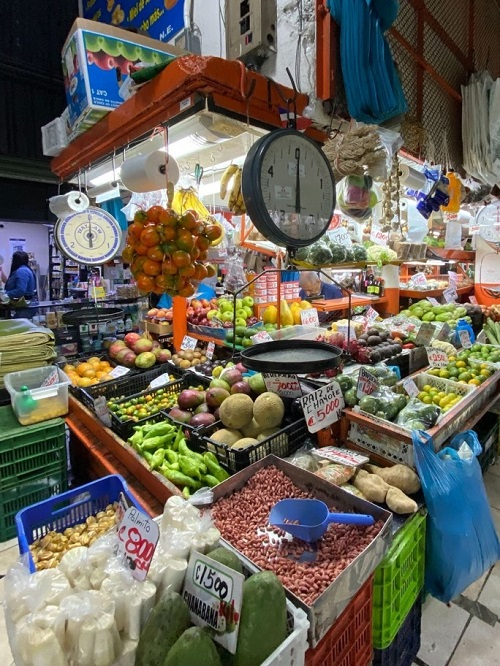
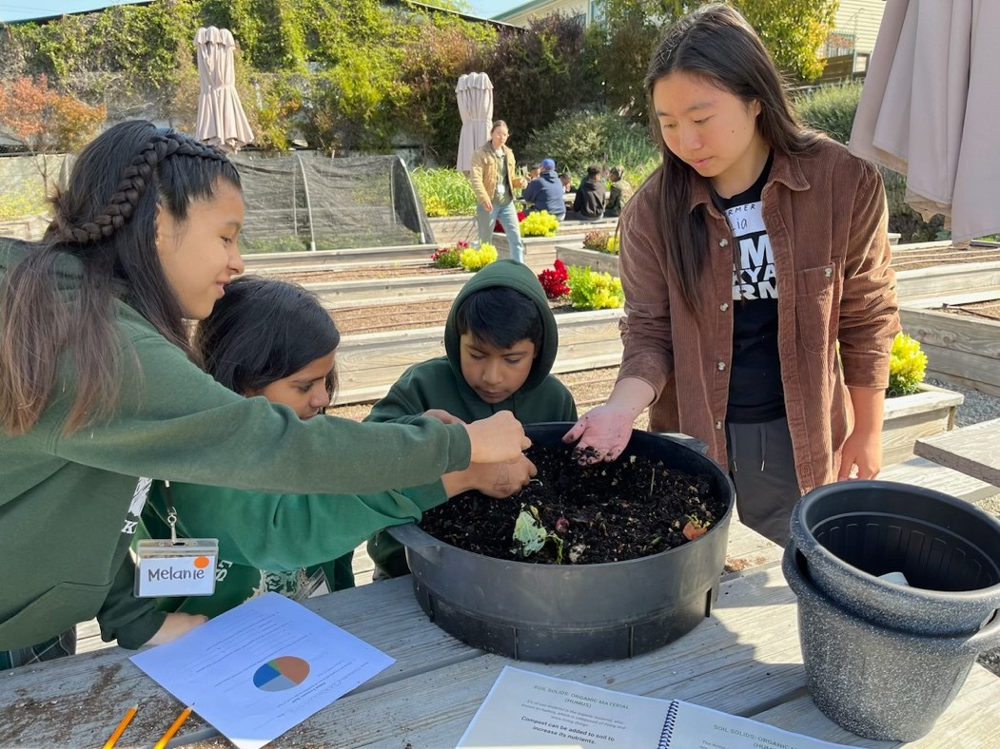
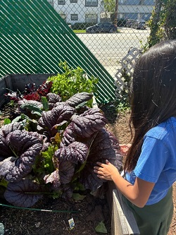

Connecting Food, Earth, Culture, and Language in the Classroom
Language and food connect us universally, while also being place and culture specific, which makes food an ideal topic for both language and ecoliteracy study. Food is important culturally and holds special meaning for families, religions, nations, and celebrations of all kinds.
Classroom Activities to Connect Food and Earth Study
Here are a few fun ways to begin discussing food with your multilingual learners of English:
-
- Talk About Special Food: Ask each student to name and describe a special dish from their culture and where the main ingredient is grown. Is it grown locally? Is it possibly imported from another region or country? (Ideally the actual dishes could be shared as part of a class or school celebration.)
- Create a Recipe Book: Have your class compile a recipe book of all of the students’ favorite dishes, with each student receiving a copy of the booklet. This gets students thinking about the importance of food to them and their traditions. From there, students can begin to understand some of the issues surrounding food, which include challenges regarding growing, transporting, accessing, and consuming food.
- Engage in Word Study: Do word study with
your students by dissecting and analyzing relevant words. In
this case, with the plan to extend food discussion into
ecoliteracy exploration, word study might include words like
compost, vermicompost,
metacrisis, and monoculture. You can
complete the word study in advance of the lesson(s) in order
to frontload the knowledge:
-
- Compost is a mixture of leaves and manure for fertilizing land. It’s like a conditioner for soil, just as we use a conditioner for hair.
- Vermi, meaning worms, is composting with worms.
- Meta + crisis: meta meaning beyond/comprehensive and crisis, so a crisis that goes beyond the sum of multiple separate crises — note the plural of crisis).
- Mono + culture (one culture or crop).
-
- Activate Prior Knowledge: You can introduce some food-related ecoliteracy topics using a set of true/false statements, where students work in pairs to predict the answers. Through further class study and discussion, they’ll ultimately understand the “correct” responses. Download an example worksheet here (Earth and Food: What Do You Already Know), or you can write out a cloze narrative with a word box.
The More You Know: Some Background on Food Systems
The global food system is driving the planetary metacrisis of climate change, biodiversity loss, pollution, and waste, while failing to address rising levels of hunger and malnutrition. To feed the world’s population and meet environmental and sustainability goals, our global food systems must be transformed. (See image, left, of an outdoor food market in Quepos, Costa Rica.)
To state this in more specific terms, and according to Paul Hawken in his book Regeneration, “Today’s food system has become the single greatest cause of global warming, soil loss, chemical poisoning, chronic disease, rainforest destruction, and dying oceans….The food system, for all its myriad ills and assaults, offers an extraordinary opportunity to regenerate soil, climate, community, cultures and human health” (p. 171).
As you introduce these topics to your students, it’s important that you arm yourself with the background knowledge required to teach it. It can be time-consuming, though, to learn about such a massive and complex topic. Download a brief overview here; this short overview covers shifts in industry and agriculture and the issues of food access and waste.
In addition to discussing these topics, you can also share other resources:
-
- Links on the food waste–related UN Sustainability Goal
- A food waste guide and a quiz you and your students can take.
- Resources and guides from ReFED, an organization combating food waste.
- This humorous short video from West Timor, by the organization Kopernik, which highlights revitalizing indigenous farming practices and using local seeds for successful growing.
Connecting Multilingual Learners and Food
Following, English language teacher Lia Chen gives a case study snapshot of a related program, from which we can draw inspiration and innovative ideas by collaborating with existing community farms.
Teachers and Students Learning Together: “Feed the Soil, Feed the Soul”
Teaching lessons and writing curricula on themes such as composting, seeds, and pollination, I have experienced how transformative it is for children to learn hands-on in a garden. “Feed the soil, feed the soul” is a slogan given to the work of Alma Backyard Farms, an urban farm located in Compton, California, USA that provides youth education programs intended to reconnect disadvantaged children and communities with locally grown food.

Lia explores the vermicompost bin with fifth grade students at Alma Backyard Farms.
At the farm, students have the chance to explore in nature while being led through a thematic lesson. Let’s walk through a 1-hour composting lesson:
A Lesson on Composting: Getting Your Hands Dirty!
The objective is for students to understand how composting can reduce food waste while also helping to grow new food. As instructors, we could simply tell our students what compost is made up of, but imagine how much more powerful it is for students to dig through compost windrow piles that are larger than themselves and figure out what can go in the compost.
Explorative learning is naturally integrated when taking students to a community farm — so valuable for multilingual and all learners! To best support the needs of our multilingual learners, provide scaffolds for this compost identification. A graphic organizer I recommend is a t-chart diagram with an item word box, where students search for certain items in the windrow piles and categorize them as “can be composted” or “cannot be composted.” The word box can be a picture box of items for students requiring enhanced visual support. This connects the hands-on exploration with a tangible classification language objective. After students successfully demonstrate their high-level thinking of categorization, we introduce vermicompost (a word they’ll already have heard in their word study prior to this lesson). Another opportunity for hands-on, explorative learning!
Stick your hands in soil and search for worms. As your students observe the worms, you can explain their critical role in keeping soil healthy; hint: their poop is “black gold.” Now, with comprehensible input in mind, you can get as scientific as appropriate with all things related to decomposition (another word study opportunity) — worms, excrement, and soil layers. Teaching about the importance of rich topsoil to growing nutritious food is a great place to start!
Bringing the Farm to Your Classroom
I acknowledge that it isn’t always simple to bring a whole class of students to a community farm, but if possible, it is definitely worth the effort. If that is not possible, I encourage you to bring a farm to them! (See image, right, of a third grade student exploring purple mustard plant using five senses.) Here are a few ways to do this:
-
- Create a Class Worm Bin: Have a class worm bin that is full of soil, worms, and your students’ leftover lunches! This is an opportunity for true scientific curiosity and discovery to bloom.
- Provide Resources for Higher Order Thinking: Ask your students to create a T-chart based on information found in books or online (with appropriate scaffolds, such as providing a particular set of books or providing a website for the students to search). This important independent (or paired) think time will help the students understand why they can put their leftover food in the bin, but not their eraser!
- Discuss as a Class: To develop this concept further, you can lead a classroom discussion on appropriate items placed in the bin, utilizing sentence frames such as “___ can go in the vermicompost bin because ___” written on the class whiteboard. This is an opportunity for checks for understanding with thumbs up/down activities to show agreement/disagreement.
There is inherent value in simply talking about where food originates — not the kitchen, not the supermarket, and certainly not out of thin air. Food is cultivated through loving the soil. This is something students of all ages understand, as they have daily experiences and interactions with food. They are excited by these processes, even where it takes time to fully grasp the related concepts and vocabulary. Be patient with yourself and with your students.
I particularly like building a worm bin and framing lessons around composting because it is doable in a classroom setting but also teaches about many of the food-related issues discussed in this blog, including the importance of healthy soil and the problem of food waste. It teaches students that soil is not dead, but rather it is living. And it is the home to larger creatures, such as worms, as well as millions of unseen microbes, which reinforces the ecoliteracy principle of “making the invisible visible.”
As we move further into this season, many of us around the world celebrate multiple holidays, all of which include special foods for which we are grateful to the soil and the lands upon which they are grown; the air, water, and energy required; and all the creatures who play critical roles, from microbes to earthworms to pollinators to farmers. At the same time, let’s work together to teach about healthy and humane food systems, reducing food waste, and ending hunger. Wishing you and your students a wonderful, ecoliterate month!

About the author
Bernadette Musetti
Bernadette Musetti is a long-time TESOL professional and a professor of urban and environmental studies at Loyola Marymount University in Los Angeles, California, USA where she is currently teaching the Environmental Studies and Elementary Teacher Education capstone courses. She also teaches an engaged learning course in "A Better World," which she tries to create through all of her teaching. She takes future K–5 educators on global immersion trips to Costa Rica and Bali to study ecoliteracy and place-based education.

About the author
Iliana Chen
Iliana "Lia" Chen, with degrees in elementary education and environmental studies, has taught English in Indonesia, Costa Rica, and Taiwan. Currently, she develops curriculum for learning centers in Bali with the NGO The Suwandi Foundation. In March 2025, Chen will commence a Fulbright English Teaching Assistantship Fellowship in Uruguay.